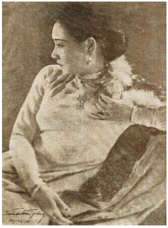

Gã khổng lồ con đắp đá phủ lên xác người anh em của gã. Dưới chân của kẻ đã chết, gã xếp xác của những người khác như đồ cúng tế: tên đầy tớ giúp việc nhà bếp, tay huấn luyện chó và hai con chó săn. Hai kẻ sống sót qua cơn thịnh nộ của gã khổng lồ đang nằm trước tháp canh, bị trói và nhét giẻ vào mồm: Louis và lão Bọ. Lão Valiant đang bước lên bước xuống trước mặt họ, trông lão không vui tí nào.
“Chú mày nhìn đi!” lão gọi Jacob. “Lần này chú mày lại lôi ta vào mớ bòng bong gì đây? Thái tử Lothringen! May là hắn ta vẫn còn sống, nhưng Vua Gù không phải là kẻ thích hợp để chúng ta mặc cả bán chiếc nỏ thần. Không lẽ biến nữ hoàng thành kẻ thù vẫn chưa đủ với chú mày sao?”
Jacob cảm thấy vòng tay Cáo một lần nữa ôm siết anh thật chặt trước khi cổ tuột xuống ngựa. Hơi ấm của cô như một lời hứa khi anh nhảy khỏi yên ngựa.
Mọi sự sẽ tốt đẹp.
Anh lờ đi những lời chửi rủa của lão Valiant và bước đến chỗ hàng rào bao quanh khu thành cổ đổ nát. Thành Phố Chết. Không có nơi nào từng khiến anh muốn nhìn rõ đến vậy. Thậm chí chính lão Chanute cũng tránh xa nơi này. Jacob nghĩ anh nghe thấy những giọng nói, một tiếng hát, bị cắt ngang bởi những tiếng thét khào khào. Có lẽ những kẻ điên loạn sống giữa đống đổ nát đã dự cảm đêm nay sẽ là một đêm đặc biệt. Có lẽ chỉ cần chạm vào những bức tường không thôi cũng đủ khiến người ta trở nên điên loạn như thế. Jacob đưa mắt tìm một lối đi dẫn lên núi giữa những con đường chết chóc. Từng có cả ngàn cư dân sinh sống trong thành phố. Anh thấy những bậc thang và những cây cầu, những nhà thờ đổ sập, ma trơi viền quanh cửa sổ trống không của những ngôi nhà và những tòa tháp, chim sẻ dịch hạch làm tổ trên tường những tòa lâu đài đã sụp đổ, loài chim duy nhất có thể sống tốt ở những nơi thế này. Nếu cung điện của Guismund thật sự xuất hiện, hẳn phải mất một quãng đường rất dài để đến đó, và Jacob cảm thấy sự sống đang trôi tuột qua anh qua từng hơi thở.
“Ta nghe nói gã Goyl vẫn còn sống?” Lão Valiant bước đến bên cạnh anh. “Tại sao chú mày không bắn quách gã đi? Cạnh tranh thì có lợi cho mặc cả à?”
“Tôi không bắn nhanh tay được như ông, không nhớ sao?” Jacob nhìn lên tòa tháp canh.
Cáo đang đứng chờ cạnh cánh cửa.
“Ông có cho mang cái xác đến không?”
“Có chứ.” Lão Valiant thở dài thảm thương. “Ta hy vọng là chú mày đã hình dung ra việc này khó thế nào! Ta phải hối lộ cho đám khổng lồ con canh gác trong hầm mộ bột tiên nhí đủ dùng cho cả năm, rồi phải thuê hai tên khác để khiêng cỗ quan tài ra. Ta còn phải diễn một màn thật đạt trước Hội Đồng Người Lùn để thuyết phục họ rằng ta cũng rất giận dữ vì cái xác không cánh mà bay y như họ, bỏ bê hết những công việc kinh doanh khác để đến đây! Ta muốn có cây nỏ thần! Và ta muốn kiếm một gia tài từ cây nỏ ấy! Ta đang lên kế hoạch một mình đến Albion ngay khi chú mày có được chiếc nỏ, rốt cuộc thì Wilfred “Hải Cẩu” có thể là khách hàng thích hợp nhất của chúng ta, chú mày thấy ta nói có đúng không?”
“Hẳn rồi,” Jacob trả lời.
Anh chỉ mừng vì lão Valiant không hề biết chút gì về lời anh hứa với Robert Dunbar. Trong trường hợp chiếc nỏ thần thật sự cứu mạng anh, anh sẽ phải cẩn thận để lão lùn không bắn chết anh.
Bên trong tháp canh trống không, ngoại trừ vài cây thương gỉ sét và xác một con dê đã chết giữa những bức tường. Xác của Kẻ Tàn Sát Phù Thủy nằm trong một chiếc quan tài gỗ tuềnh toàng mà người lùn dùng chôn cất các công nhân mỏ xấu số.
Cáo giúp Jacob nâng nắp quan tài lên.
Trong cỗ quan tài đơn sơ chiếc áo choàng của cái xác không đầu trông càng có giá trị hơn.
Cáo nhìn anh.
Một chuyến đi săn dài đằng đẵng. Nhưng cùng nhau, anh và cô đã đến được đây. Như họ đã hứa với nhau trong lâu đài của lão Valiant. Từ hơn sáu năm nay mối quan hệ kề vai sát cánh của cả hai không chỉ định hình nên cuộc sống của anh, mà còn cả của cô nữa. Trong suốt quãng thời gian ấy hiếm có kỷ niệm nào mà Cáo không cùng anh trải qua. Chiếc bóng thứ hai của anh... nhưng giờ đây cô có ý nghĩa còn hơn cả thế. Không gì chỉ cho anh thấy rõ điều ấy hơn một tháng vừa qua. Cô là một phần của anh, một phần không thể tách rời. Đầu, tay và tim.
“Chú mày còn chờ gì nữa?” Lão Valiant nôn nóng nhón chân trên đôi ủng được đặt đóng riêng cho lão. Chúng không chỉ có gót cao, mà phần đế cũng giúp lão trông cao hơn. Những thợ đóng giày cho người lùn rất tài tình trong việc thêm vài centimet chiều cao cho khách hàng của họ.
Trước tiên Jacob lôi chiếc túi đựng bàn tay ra khỏi túi xách. Cũng giống như với cái thủ cấp, anh hầu như không có cảm giác gì khi chạm vào làn da chết ấy, và trong một thoáng anh lo rằng phép thuật của Guismund sau hàng trăm năm đã mất đi tác dụng. Ngươi sẽ sớm biết thôi, Jacob. Những móng tay vẫn còn dính chút vàng, nhưng chúng không lên mốc như vẫn thường thấy ở những phù thủy khác. Có lẽ Guismund đã tìm được một cách để tránh tác dụng phụ này. Thường xuyên uống máu phù thủy có thể dẫn đến hậu quả khủng khiếp. Nó tấn công não và gây ra chứng ảo giác nặng. Tất cả phù thủy đến một thời điểm nào đó đều sẽ phát điên. Nếu những tài liệu trong kho lưu trữ ở Vena là đúng, thì từ nhiều năm trước khi chết ông ta đã không còn tin tưởng những kỵ sĩ trung thành nhất của mình, xử tử không biết bao nhiêu bằng hữu và kẻ thù bằng cách bỏ đói họ trong những chiếc lồng bằng vàng treo trên tường lâu đài.
Bàn tay ở phía Nam.
Jacob cúi người trên xác chết. Bàn tay cứng đờ và lạnh ngắt, nhưng nó khớp vào phần cánh tay bị cụt như thể anh đang lắp ráp một con búp bê quỷ ám.
Cơn gió thổi qua cửa sổ tòa tháp ẩm và lạnh như tuyết, làm ngọn lửa trong chiếc lồng đèn Cáo đang giơ cao trên cỗ quan tài cháy lập lòe.
Jacob mở chiếc túi da đựng sợi dây chuyền cùng quả tim ra, kéo chiếc áo choàng của cái xác cho đến khi lỗ trống viền vàng trên ngực lộ ra. Quả tim màu đen mà cô cháu gái của Ramee đeo trên chiếc cổ trắng ngần. Một làn hơi ấm nhẹ nhàng lan trên tay anh khi anh tháo món trang sức ra khỏi sợi dây chuyền. Gần như một lời chào mừng của quả tim dành cho anh.
Quả tim ở phía Đông.
Nó khớp với lỗ trống viền vàng như thể một quả tim đá đã từng đập trong ngực Guismund lúc sinh thời. Có lẽ sự thật đúng là như vậy.
Gã Goyl để thủ cấp trong chiếc túi-giấu-đồ mà Jacob đã mang theo bên mình.
Thủ cấp ở phía Tây.
Khuôn mặt cứng đờ và không có sự sống như bàn tay khi Jacob lôi cái đầu trong túi ra, nhưng ngay khi anh gắn nó vào cổ, đôi môi dát vàng liền mở ra.
Hơi thở khò khè thoát ra từ cái miệng hé mở nghe như tiếng một kẻ sắp chết đang trút hơi thở cuối cùng. Làn da hồng hào của cái xác đổi màu xám ngoét, và khuôn mặt bắt đầu vỡ vụn ra, như thể được nặn từ cát vàng. Cái cổ, đôi bàn tay, rồi cả cái xác vỡ vụn. Thậm chí cả chiếc áo choàng cũng mục rữa ra trước mắt họ, cho đến lúc chiếc quan tài chẳng còn lại gì ngoài đám tro bụi xám xịt bẩn thỉu trộn lẫn bụi vàng.
“Cái quỷ gì vậy…”
Lão Valiant nhìn trừng trừng xuống cỗ quan tài, sửng sốt, nhưng Jacob thở phào nhẹ nhõm. Phép thuật của Kẻ Tàn Sát Phù Thủy vẫn còn tác dụng. Và anh đã tìm ra cho mình một miền đất mới, như chim sổ lồng.
Cáo đã đứng cạnh cửa sổ và nhìn ra khu thành đổ nát.
Trên nền Thành Phố Chết một cái bóng hiện ra từ trong đêm tối. Nó dần dần thành hình, chậm rãi, vì những thứ đang được nhào nặn ra từ đó rất khổng lồ. Những tòa tháp, tường răng cưa, những bức tường. Ban đầu chúng trong suốt như thủy tinh lấm bẩn, rồi chúng dần biến thành đá, lờ mờ xám như đám bụi trong quan tài.
Lâu đài như một đóa cúc gai bằng đá mọc lên giữa đêm, nó không được xây nên để làm người ta phải xuýt xoa về vẻ đẹp của mình, mà khiến người ta phải kinh sợ. Từ đằng xa người ta đã có thể nhận ra những cái chuồng treo trên những bức tường viền đá răng cưa mà Guismund dùng để nhốt những bằng hữu, kẻ thù và bỏ mặc họ cho đến khi chết đói. Jacob trông thấy cánh cổng sắt phía dưới. Nếu những câu chuyện được truyền miệng từ thời Kẻ Tàn Sát Phù Thủy là đúng, cánh cổng sẽ thức dậy với sức mạnh của tử thần ngay khi một kẻ thù tìm cách xâm nhập. Một thợ săn kho báu đang tìm cách cuỗm chiếc nỏ thần của Guismund chắc chắn không được xem là bằng hữu.
Trước hết tìm cách đến chỗ cánh cổng đã, Jacob.
Bên ngoài gã khổng lồ con vẫn tiếp tục chất đá lên thi thể người anh em của gã. Đá chất càng cao thì tầm quan trọng của kẻ đã khuất đối với gã càng lớn. Mỗi bằng hữu hay người thân khi đến thăm mộ một người khổng lồ đều đặt một hòn đá lên đó, vì thế ngôi mộ đôi khi có kích thước của một ngọn đồi nhỏ.
Hoàng tử vẫn bất tỉnh nhân sự. Gã khổng lồ con đã quật hẳn túi bụi, nhưng hắn vẫn sống sót. Jacob không chắc liệu đây là tin lành hay tin dữ. Hình dung Louis ngồi trên ngai vàng nhất định không phải là một ý nghĩ có thể khiến người ta an lòng.
“Phụ thân của ngài sẽ để các ngươi làm mồi cho chó!” Lelou the thé chửi bởi. “Ngài sẽ mọi tim ngươi ra dùng điểm tâm...”
“…và lột da ông cuốn thuốc lá. Ta biết mà.” Jacob rút dao ra và cúi xuống Louis.
Lelou nhìn anh khiếp đảm không nói nên lời như thể lão đã nuốt phải lưỡi.
“Phải, thật tiếc là hắn không thể đến cùng chúng ta,” Jacob nói trong lúc cắt vài lọn tóc vàng nhạt của Louis. “Ta chắc chắn cánh cổng sắt sẽ chào đón hẳn nồng hậu hơn ta.”
“Chú mày làm thế để làm gì?” lão Valiant hỏi. “Chú mày muốn bán lọn tóc cho mấy cô ả đang buồn khổ ngắm ảnh của hắn và mơ mộng trở thành hoàng hậu Lothringen hả?”
Jacob không trả lời câu hỏi. Anh sẽ không thể biết ơn Alma hơn thế này vì đã dạy anh những thứ mà phù thủy không bao giờ tiết lộ cho người phàm. Một lần nọ bà nhổ một sợi tóc của anh và quấn nó quanh ngón tay gầy guộc. “Sợi tóc cho ta biết về con nhiều hơn cả máu của con đấy,” bà nói. “Mỗi một sợi tóc đều tiết lộ con là ai và con từ đâu tới. Nhưng người phàm các cháu để nó vương lại khắp trong lược và bàn chải mà không nhận ra rằng, chỉ cần một nhúm tóc nhỏ cũng cho phép một kẻ lạ mặt nhét vào túi hắn một phần rất mạnh của con. Đối với một phù thủy, chỉ cần một sợi tóc của con sót lại trên sàn tiệm cắt tóc cũng đủ để hô biến ra phiên bản thứ hai của con chỉ trong vòng vài giờ.”
Anh không đủ khả năng để làm điều ấy. Nhưng có lẽ cánh cổng của Guismund sẽ cho rằng anh là một hậu duệ xa nhiều đời. Cũng đáng để thử một lần.
“Ngươi không có quyền!” Giọng lão Lelou run lên vì giận dữ. “Thợ săn kho báu ư? Bọn bây là một lũ kẻ cắp bẩn thỉu! Cây nỏ thần thuộc về những người thừa kế của Guismund!”
Jacob đứng dậy.
“Phải, nhưng tại sao những đứa con của ông ta không bao giờ đến lấy nó? Ông nghĩ sao, Lelou?” Anh nhét nhúm tóc của Louis vào chiếc túi-giấu-đồ rỗng. “Có lẽ họ chưa bao giờ vào trong hầm mộ của ông ta. Ông chỉ có thể giải thích điều đó rằng Kẻ Tàn Sát Phù Thủy là một người cha kinh khủng và cuối đời còn bị loạn óc? Có phải ông ta, như một số người nói, đã giết mẹ của họ và vì vậy họ đã chối bỏ ông ta? Hay là họ quá bận rộn gây chiến với nhau?”
Arsene Lelou mím đôi môi trắng bệch. Nhưng, như mong đợi, ông ta không thể bỏ qua cơ hội thể hiện sự thông thái của mình.
“Họ nghĩ cha mình muốn giết tất cả bọn họ!” lão nói giọng mũi. “Vì vậy mà họ không bao giờ vào hầm mộ. Vì vậy mà họ không bao giờ đi tìm cây nỏ thần. Họ chắc chắn rằng Guismund sẽ tìm ra cách giết bọn họ.”
Lão Valiant khụt khịt mũi đầy ngờ vực. “Tại sao ông ta phải làm thế chứ. Ông ta cần một người thừa kế.”
Lelou chỉ đảo mắt chế nhạo. “Kẻ Tàn Sát Phù Thủy bị loạn óc. Ông ta không muốn ai ngồi lên ngai vàng của mình cả, kể cả các con của mình. Ông ta muốn thế giới này được sinh ra và bị diệt vong cùng với ông ta!”
Cáo bước đến bên cạnh Jacob.
“Chúng ta đi tiếp thôi!” cô nói nhỏ.
Phải, họ nên đi tiếp, nhưng Jacob vẫn còn nghĩ ngợi về những điều Lelou đã nói. Có lẽ mang theo tóc của Louis không phải là ý hay. Anh kéo Cáo đi.
Sau lưng họ lão Lelou đang dẫn ra tất cả những câu chuyện kinh dị viết về tòa lâu đài và Thành Phố Chết. Jacob đã nghe qua tất cả những câu chuyện ấy.
Anh lấy sợi dây chuyền trong túi ra, cháu gái của Ramee và trước đó có lẽ là con gái của Guismund đã từng đeo nó.
“Anh sẽ kiếm cho em một chiếc mặt dây chuyền,” anh nói trong lúc đeo nó lên cổ cô. “Chiếc mặt đẹp nhất mà anh có thể tìm thấy trong cung điện của Guismund. Nhưng hãy để anh đi một mình. Làm ơn! Trong đó rất nguy hiểm. Anh sẽ quay ra với chiếc nỏ thần. Anh hứa.”
Cáo đặt bàn tay lên ngực anh, nơi in dấu con bướm ma, thay cho câu trả lời. “Còn gì có thể tệ hơn nhà của tên yêu râu xanh?” cô hỏi. “Hay tệ hơn việc phải ở lại đây chờ anh?”
Valiant ra dấu cho gã khổng lồ con đạp ngã hàng rào để mở một lối vào.
Lão lùn đưa cho Jacob hai cây nến.
“Không dễ tìm được chúng đâu,” lão nói. “Nợ nần của chú mày ngày càng chồng chất. Ta sẽ chờ các người ở đây. Hầm mộ là quá đủ với ta rồi, nhưng đừng có nảy ra ý nghĩ ngu ngốc nào nữa đấy! Ta sẽ tìm ra các người nếu các người cố lừa ta, và tin ta đi, ta có thể trở nên khó chơi hơn Vua Gù nhiều.”
“Tôi sẽ ghi nhớ,” Jacob nói. Rồi theo Cáo đi qua hàng rào đã bị đạp đổ.